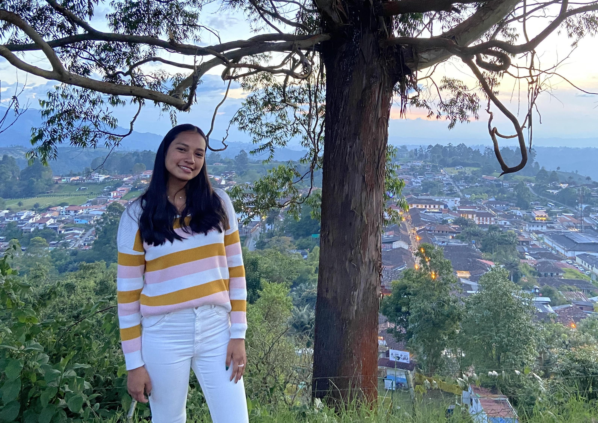

Hi, I'm Valeria.
I'm an undergraduate at the University of New Mexico studying Geography, with a minor in Earth and Planetary Science. I use GIS and remote sensing to study land use — and outside of that, I hike, paint, and read. This site covers my research, work experience, and a few of the projects I'm proudest of.

A quick tour of my background
Before geography was my major, it was just my life — here's some of the ground I've covered.
Cali, Colombia
Born and raised in Cali, where Spanish is my first language and my whole family is of Latin descent. Colombia is still home.
Colorado
Moved to the U.S. at 16 and completed high school and my first year of university in the Rockies.
Texas
One stop among several across the U.S. during five years of exploring new states and landscapes.
Puerto Rico
Home to some of the most breathtaking coastline I've seen — and a reminder of how much geography shapes daily life.
Albuquerque, New Mexico
Landed in "The Land of Enchantment" and am now finishing my degree in Geography at UNM.
What I'm working on
Amazon deforestation
Mapping forest loss in Brazil and Colombia, with a focus on agricultural and mining activity in the Amazon Rainforest.
Healthcare access in NM
Analyzing the distribution of hospitals and urgent care facilities across New Mexico.
Choropleth deforestation map
An interactive map visualizing Amazon deforestation rates in Brazil from 2000 to 2022.
Interested in working together?
I'm always glad to talk about research, fieldwork, or opportunities in geography and GIS.